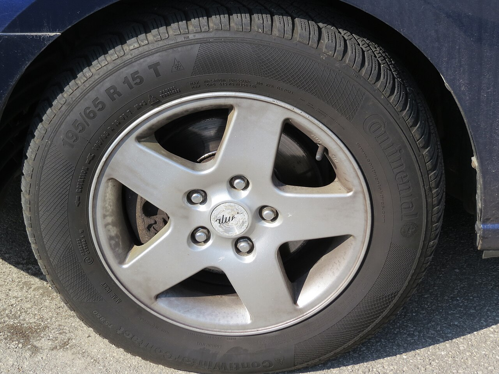

When Should I Switch to Winter Tires in Ontario?
The 7°C rule, the booking crunch, and the insurance discount most drivers miss.

Photo: GT1976, CC BY-SA 4.0, via Wikimedia Commons
_Continental_ContiWinterContact_TS_850_195-65_R_15_91_T_tire_at_Bahnhof_Stockerau.jpg){kind=link}
Ask ten Ontario drivers when to switch to winter tires and you'll get ten answers: Thanksgiving, Halloween, first snowfall, "whenever the shop can fit me in." The real answer is simpler than any of those. It's a temperature, not a date.
The 7°C rule
Winter tires are made from a softer rubber compound that stays flexible in the cold. All-season tires start to harden below about 7°C (45°F), and hard rubber grips less. So the switch point is when the average daily temperature drops below 7°C and stays there. In most of Ontario that happens between late October and mid-November. Southern Ontario runs a week or two later than the north. Watch the forecast, not the calendar — a warm November week is no reason to rush, and a cold snap in mid-October is a reason to book now.
Book before the rush
Every tire shop in Ontario has the same problem: everyone calls the week of the first snowfall. Appointments stretch to two or three weeks out, and the people who waited are driving on summer rubber through the first storm. Book in late September or early October, even if the appointment itself is for late October. The booking is free; the wait is not. If you swap the wheels yourself, the same logic applies — do it on a dry weekend before the cold sets in, not in a slushy driveway at dusk.
What about the law?
Ontario has no law requiring winter tires. Quebec does — winter tires are mandatory there from December 1 to March 15 — so if you drive to Montreal for the holidays, you're legally required to have them on. Ontario relies on common sense and insurance incentives instead, which brings us to the part most drivers miss.
The insurance discount
Many Ontario insurers offer a winter tire discount, typically up to 5% off your premium, for having winter tires installed from roughly November to April. You usually have to tell your insurer and confirm the tires are on all four wheels. Five percent isn't a fortune, but on a $2,000 premium it's $100 a year — real money for a phone call. Ask your provider what they offer and what proof they want.
Too early is also a mistake
Switching in September wastes your tires. That soft winter compound wears fast on warm, dry pavement — every warm week on winter tires is tread you're throwing away. The sweet spot is narrow: late enough that the warm days are done, early enough that you're not in the first-snowfall line. For most of Ontario, that's the last two weeks of October through the first week of November.
The bottom line
Watch for 7°C, book early, and don't wait for snow. The drivers who switch on temperature instead of panic are the ones already set when the first storm hits.
← Back to the winter tires guide